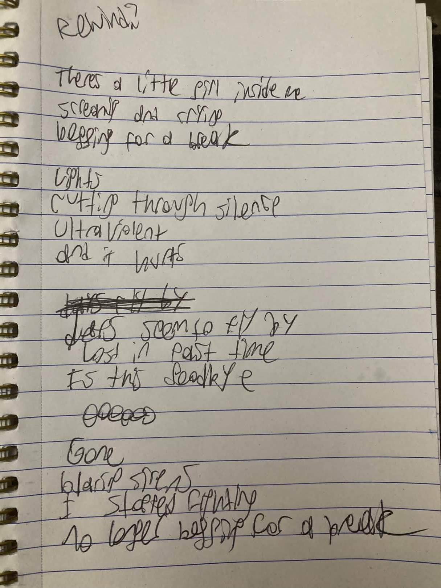
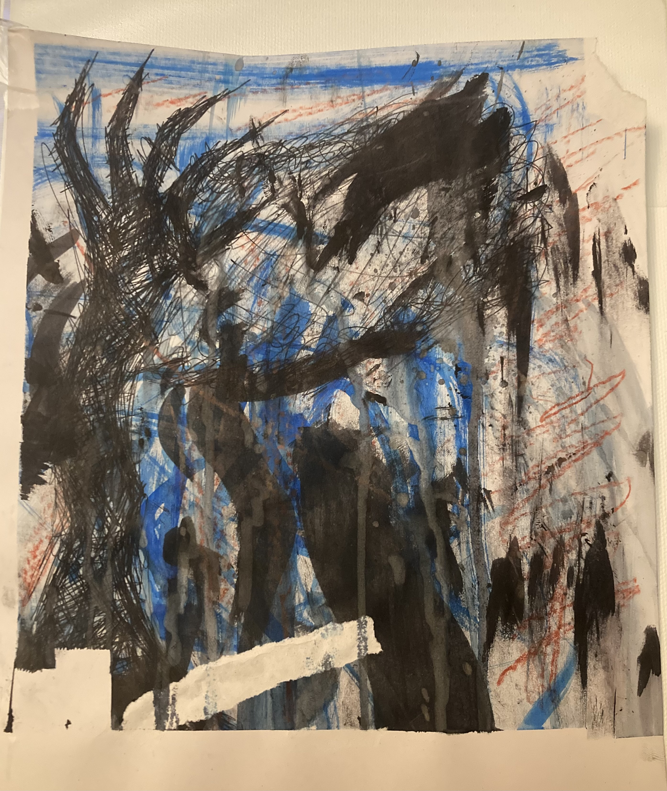

hi this is my first "blog?" post | 4/2/2026 | 7:10AM
i dont know if anyone is gonna read this ever. might just be something for the google website crawlers to index. but it would be really cool if someone did read this.
im working on music stuff. right now im working on a song called... something.

right now in my head it's just called "THE SONG" which i find pretty funny.
its in the same key as weird fishes (by wadiohead) i think. and it sounds a lot like søulsearch
all roads lead to søulsearch
i don't know. it's kinda funny how a lot of my songs sound like his. probably just going crazy though. Zoochosis.
i really like this fuckass font. makes me feel like that one image with the butterflies and shit.
my electric guitar is BROKE.broker than me. and thats a tragedy. just the high E string though.
my nylon guitar's g string broke. god i love the word g string.
i dont know. im behind onschool work.
failing like all my classes at this point. its okay though. cause i can sing.
did you know: that the word for FLAME in norwegian is "flammen"?
okay wait i need to get my raggedy ass to school.
goodbye beautiful people.
OH WAIT! im also working on another song called "four months away"
four months away
four months away
four months away
four months away
oooooohoooooooooohhaaaahhh
i want to stay
(please dont leave me)
i want to stay
aaaahooooooooooh
aaaaoooohooooh
aoooahaaaaohhhhhhhhhhh
aaaaaaghhh
i want a break
i want a breaaaaaaaaaaaaaaaaaaak
oooooohoooooooooohhaaaahhh
oohaohah
oahohah
(dont leave)
dont leave
dont leaveeeeeeeeeeeeee
eeaaaaaaaaaaavee
eeeeeae
eaheah
aaaaaaghhh
aaaohah
it has such a strong feeling in my chest that is hard to articulate in sound.
but it's good when i do it right.
no clue what this is. but it is in open f. so it's a real string snapper. fun to play tho.
don't even know if this will go on the album. it's a lot more intimate than the rest of the songs i think.
too intimate. even for me.
and it's just a little thing. it can't take the stress of an album.
the end always makes me cry on this one.
probably because of this from the spongebob journal incident.
wizard thinks im a genius. i think im just walking the line between average life and divine intelligence. or i've gone fucking crazy. one or the other.
also this song is fun to rock to. start rocking when you play music. and moving. moving helps. dont just sit still. you weirdo. freak.
this one is a classic. beauitful classic.
problem is, i've done this one for so long the style has changed on it.
is that a good thing, or a bad thing?
I DONT FUCKING KNOW
this one. omg.
im experiementing with some billie ellish ass whisper tones.
its so good. i love this song.
OOOHH I PRRROMISEEE!!111111
this is it.
this is the song i want to be remembered by if i die early.
this is THE song.
bandlab slop that i forgot the chords of.
this one is so fucking annoying.
running in CiiiIIrrclesss!
fuck you and your vocal flips, spunchbop.
why do you do this to yourself?
you could make easy pop music.
but no. you're a microlowkirkenuinenichehead who has a fixation on wadiohead
(and i would have it any other fucking way right now)
this one is simple. and dull. and kind of hhhudgfguhdgfhufdgufdfhugd.
it's nicknamed "from the hospital phone" because it kinda feels...
like the iron in your throat after an overdose
but in a metaphorical way.
also experiementing with whisper stuff on this one. WOOOOHOOO
omg i love this fuckass font.
goo goo... gah gah?
I MADE THIS ONE IN THE DESERT.
i'm saying that because this very much feels like a desert song.
not because my vocals are dry. just because. fuck.
like everyone has given up on you. and the feeling of cold tile against your face, curled up in a fetal position in a mess of your own tears and snot.
so uh. yeah.
you'll crawl into my arms again is done in the third person.
i don't think i experience physical attraction
but then again, what hot bitches are there in vegas?
and trying to be the better man.
author is AFAB. but gender nonconforming.
it's difficult because i only listen to male singers. though i am opening up to female voices.
it's like me not liking shrimp because of it's shape, color, and name.
the same feeling but translate that to music. and you'll start to realize my therapist is right about every word she says about me.
she says im on the spectrum.
fuck.
also wrote this one in the desert.
it feels like the color grey. but like. psychiatric ward grey.
group therapy grey, if i must.
but the skies don't feel so grey.
i wrote this when it felt so fucking bleak.
it's all bleak
but you LIBERALS can't comprehend that everything is bleak!
ACAB. FUCK ICE. FUCK TRUMP. FUCK MAGA. JUSTICE FOR THE EPSTIEN VICTIMS. DISTRIBUTE BILLIONARES WEALTH VIA TAXES. STEAL FROM BIG CORPORATIONS.
I CANT FUCKING FOCUS IN THIS HOUSE FOR ONE GOD DAMN SECOND.
...
hi. it's me again.
can i just finish this. people are fucking texting me. oh my god.
this is a name i thought of.
here is the original photo it came from!!! cut up a magazine for it. cause im uh. idk. niche.
is telling you what it means bad? i don't know.
(highlight this with your cursor if you want an explaination.)the whole album is about the childhood i missed out on. hence the name "half of my life". totally not taken from radiohead's daydreaming. (which i bawled my fucking eyes out to for three hours straight when i first heard it). it's me mourning the childhood i never had bc of cps and abuse. terrors of tommorow. you NEVER know what will happen next. if you'll be taken by a caseworker, or if you'll be taken to a hospital, or taken to a holding center. so. yeah.
here's my branding if i ever get uh. famous. or anything. hah. (contact me, talk to me. im so bored. i want to be interviewed.)
it's 8:54pm. i just went through an incident involving violence. trapped behind doors again. its ok though. ill finish this out.
MY SIGNATURE. (if you ever want to fake it). its a guitar. hahahah. im so unique.
here is the base of the album art.
a section from the bigger piece of art. done in ink, not paint. i am NOT a painter.

i did a method i heard from a kid amnesiac interview and taped it all to my wall and took out my frustrations on it. if you're reading this as my therapist. are you proud of me?
and here's how i'm working to make the album look right now.
i'm pretty happy with it. let me know what you think though.
remember. im lonely. and my discord tag is "sponch_b0p". hmu.
the evening
you're drinking once again
the drink is seeping in
whats your name again
sinking
this feeling
its a bottomless pit
i cant take
its not easy
grow stronger
and
its not easy
to wilt and faulter
its not easy
to wake and argue
how can i
break the cycle
thinking overthining
please just wake up tomorrow
just wake up.
wounded and choked
creature
reaching
for hope
reach for the phone
i dont know
i wanna go
home